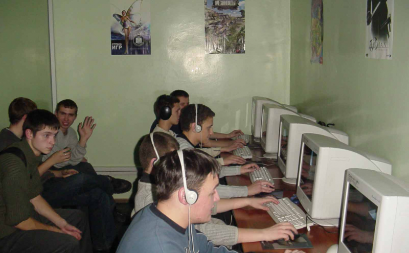
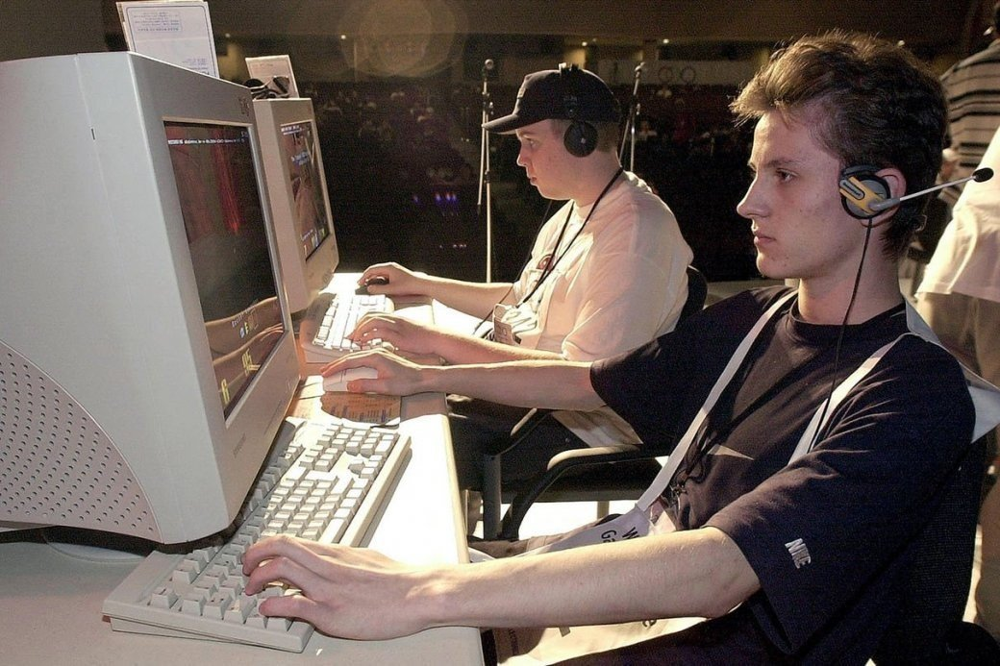
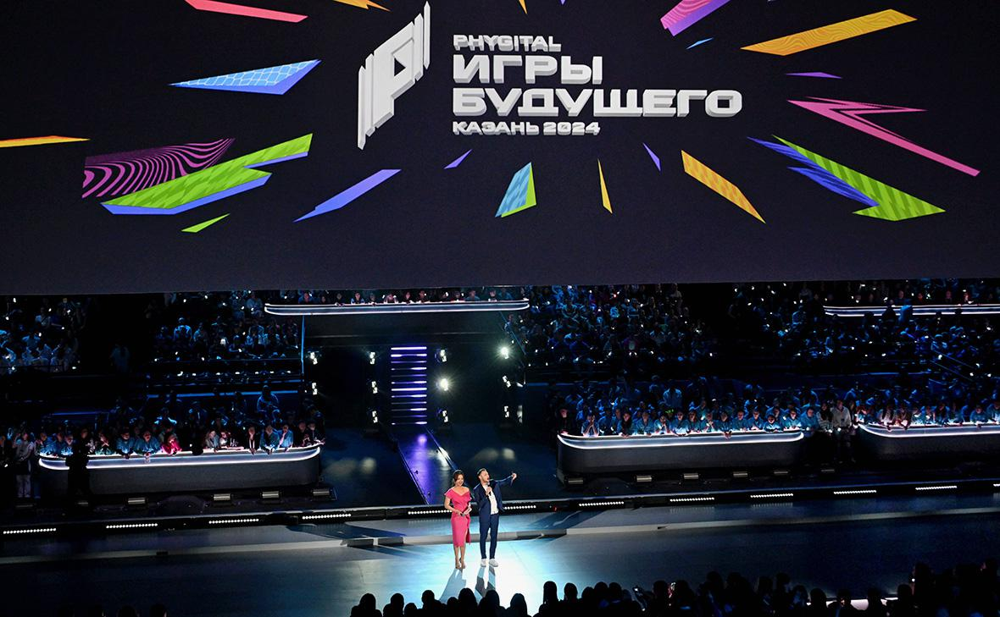
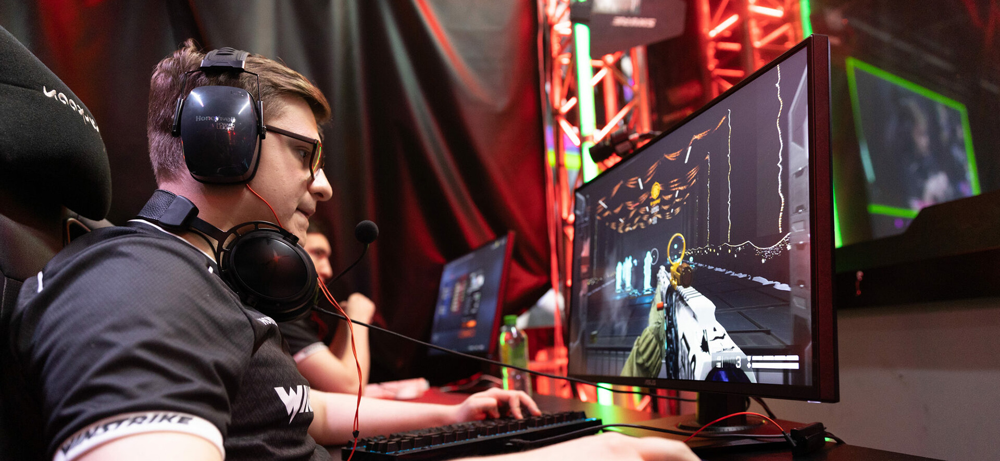
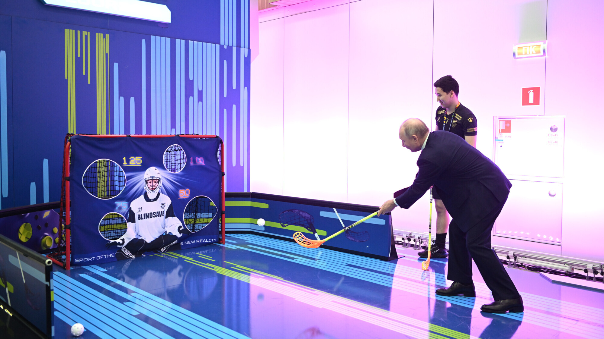

Добро пожаловать!
Это портал, на котором вы сможете ознакомиться с историей Киберспорта, лучшими российскими киберспортивными организациями:
их достижениями, составами по дисциплинам Dota 2 и Counter-Strike
История Киберспорта
Первый известный турнир по компьютерным играм прошёл 19 октября 1972 года, в рамках которого три десятка студентов Стэнфордского университета сразились в Spacewar! за годовую подписку на журнал Rolling Stone. С развитием аркадных игр начали появляться соревнования по набору очков: так, с 1980 года начали проводиться чемпионаты Atari’s Space Invaders Championship с тысячами участников, а в 1982—1984 годах поединки на игровых автоматах транслировались в прямом эфире в рамках шоу Starcade. В 90-е был проведён первый турнир The Nintendo Championship, в рамках которого участники соревновались в получении очков в таких играх, как Super Mario Bros.
Но как в России, так и в мире киберспорт начал зарождаться лишь в конце 90-х начале 2000-х годов. Тогда у большинства людей не было домашнего компьютера, из-за чего быстро набрали популярность компьютерные клубы, в которых за небольшую плату можно было поиграть в свои любимые игры. В то время самыми популярными сетевыми играми были шутеры: Counter-Strike 1.6, Quake, Doom, по ним же и проводилось большинство турниров. Позже начал набирать популярность такая дисциплина как MOBA(Многопользовательская Онлайн Боевая Арена): Dota, League of Legends и т.п.
 
В наши же дни киберспорт получил мировое признание, а призовые фонды турниров могут собирать десятки миллионов долларов.
В России
Киберспорт в России впервые вошёл в перечень признанных видов спорта (как «компьютерный спорт») в 2001 году, однако в 2006 году был исключён. Повторное включение «компьютерного спорта» в реестр произошло в 2016 году. Россия стала первой страной в мире, признавшей киберспорт официальным видом спорта. В 2017 году дисциплины «боевая арена», «соревновательные головоломки», «стратегия в реальном времени» и «технический симулятор» вошли в перечень спортивных дисциплин, развиваемых на общероссийском уровне, а Федерация компьютерного спорта России стала аккредитованной спортивной федерацией.
7 июня 2016 года был опубликован приказ Министерства спорта о включении компьютерного спорта в реестр официальных видов спорта Российской Федерации. 13 апреля 2017 года в Минюсте России был зарегистрирован Приказ Министерства спорта Российской Федерации от 16.03.2017 № 183 «О признании и включении во Всероссийский реестр видов спорта спортивных дисциплин, видов спорта и внесении изменений во Всероссийский реестр видов спорта». В соответствии с данным приказом компьютерный спорт был переведён во второй раздел — «виды спорта, развиваемые на общероссийском уровне». Это значит, что появилась возможность проведения в России официального чемпионата страны, появлению разрядов и званий по компьютерному спорту. В этом же разделе находятся все «традиционные» виды спорта — футбол, хоккей, баскетбол и т. д. C 5 июля 2017 года, в соответствии с приказом Министерства спорта Российской Федерации № 618, аккредитованной спортивной федерацией по виду спорта «компьютерный спорт» является Федерация компьютерного спорта России
ИГРЫ БУДУЩЕГО В КАЗАНИ 2024
«Игры будущего» — первый международный мультиспортивный турнир в концепции фиджитал-спорта.
Турнир проходил с 21 февраля по 3 марта 2024 года в Казани. В турнире приняли участие более 260 международных команд и более двух тысяч участников из разных стран мира. Соревнование проводилось по 21 инновационной дисциплине, основанный на сочетании физической активности, современных технологий и цифровой среды, а игроки встретились в пяти направлениях — от «спорта» до «технологий». Формат соревнований по фиджитал-дисциплинам подразумевает использование разработок в области геймдев, киберспорта, робототехники, дополненной и виртуальной реальности, информационных технологий и искусственного интеллекта. Каждая из дисциплин представляет комбинацию динамичных видов спорта с наиболее популярными видеоиграми и технологиями. В рамках предстоящего турнира прошли 10 отборочных туров — Фиджитал Игры.
  
21 февраля 2024 года состоялось торжественное открытие турнира, на котором присутствовали президент России Владимир Путин и лидеры зарубежных стран: Белоруссии, Казахстана, Таджикистана, Узбекистана и Кыргызстана.Организационный комитет по подготовке и проведению «Игр будущего» был создан Министерством спорта Российской Федерации в сентябре 2021 года, возглавил оргкомитет заместитель председателя правительства Российской Федерации Дмитрий Чернышенко, в состав оргкомитета вошёл также министр спорта Российской Федерации Олег Матыцин. Руководитель — Игорь Столяров. Призовой фонд турнира составил $10 млн на все дисциплины. Основная часть достанется фиджитал-футболу и фиджитал-баскетболу — по $1,25 миллиона. На фиджитал-хоккей, гонки, единоборства и скейтбординг выделят 500 000 $, а победители по Dota 2 получат 1 млн $.